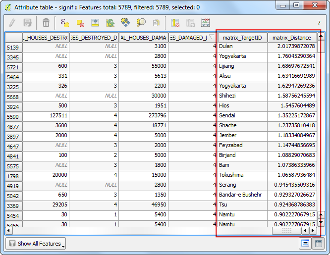

Crearea unei Hărți
De multe ori este necesară crearea unei hărți, care să poată fi imprimată sau publicată. QGIS deține un instrument puternic, denumit Compozitorul de hărți, care vă permite să luați straturile GIS și să le împachetați pentru a crea hărți.
Privire de ansamblu asupra activității
Tutorialul vă arată cum să creați o hartă a Japoniei, decorată cu elemente standard pentru hărți, cum ar fi medalionul hărții, grila, săgeata nordului, scara și etichetele.
Alte competențe pe care le veți dobândi
Obținerea datelor
Vom folosi setul de date Natural Earth - în special Natural Earth Quick Start Kit, care vine cu straturi globale, frumos stilizate, și care pot fi încărcate direct în QGIS.
Descărcați Natural Earth Quickstart Kit.
Sursa de date [NATURALEARTH]
Procedura
Descărcați și extrageți datele Natural Earth Quick Start Kit. Deschideți QGIS. Faceți clic pe .

Răsfoiți directorul în care ați extras datele Natural Earth. Ar trebui să vedeți un fișier numit Natural_Earth_quick_start_for_QGIS.qgs. Acesta este fișierul proiect, care conține straturi stilizate, în formate specifice QGIS. Clic pe Open.

În interiorul cuprinsului, vor apărea o mulțime de straturi, iar pe suportul de prezentare al QGIS va fi expusă o hartă stilizată a lumii. Dacă observați erori în partea de sus a ferestrei, faceți clic pe butonul de închidere.

În acest tutorial, vom elabora o hartă a Japoniei. Faceți clic pe butonul Zoom In și desenați un dreptunghi în jurul Japoniei, pentru a mări zona respectivă.

Puteți dezactiva unele straturi ale hărții conținând datele care nu avem nevoie pentru această hartă. Debifați caseta de lângă straturile 10m_geography_marine_polys și 10m_admin_0_map_units. Înainte de a crea o hartă adecvată pentru imprimare, trebuie să alegem o proiecție corespunzătoare. Acest set de date corespunde unui Sistem de Coordonate Geografice (GCS), în care unitățile sunt date în grade. Acest lucru nu este potrivit pentru o hartă în care doriți ca distanțele să fie în kilometri sau mile. În acest caz, trebuie să utilizăm un Sistem de Coordonate Proiectate care minimizează distorsiunile pentru regiunea noastră de interes, având unitățile specificate în metri. Universal Transverse Mercator (UTM) reprezintă o alegere decentă pentru un sistem de coordonate proiectate. Este, de asemenea, global, așa că, în mod implicit, veți evita distorsiunile dacă alegeți o zonă UTM care conține zona dumneavoastră de interes. În cazul nostru, vom folosi UTM Zone 54N. Faceți clic pe butonul CRS Status din partea din dreapta-jos a ferestrei QGIS.
Note
Japan Plane Rectangular CSJ este un sistem de coordonate de referință (CRS) proiectat pentru distorsiuni minime. Acesta este împărțit în 18 zone, iar dacă lucrați în regiuni mai mici din Japonia, este foarte bine să folosiți acest CRS.

Bifați Enable on-the-fly CRS Transformation. Introduceți Tokyo utm zone54n în caseta de căutare Filter. O dată ce au apărut rezultatele, selectați Tokyo / UTM Zone 54N - EPSG:3095. Clic pe Apply.

Acum putem începe să asamblăm harta. Mergeți la .

Vi se va solicita titlul compoziției. Îl puteți lăsa necompletat, apoi faceți clic pe Ok.
Note
Necompletând numele, compozitorul va aloca un nume implicit, cum ar fi Composer 1.

În fereastra Compozitorului de Hărți, faceți clic pe Zoom full pentru a afișa extinderea completă a compoziției. Acum ar trebui să aducem în Compozitor o vedere a hărții pe care o observăm pe canevasul QGIS.

O dată ce Add Map s-a activat, țineți apăsat butonul stâng al mouse-ului și glisați, pentru a se desena un dreptunghi în zona în care se dorește inserarea hărții.

Veți vedea că aria dreptunghiului se va umple cu harta de pe canevasul QGIS. Harta renderizată ar putea să nu acopere extinderea completă a ariei noastre de interes. Selectați pentru a deplasa harta în fereastră și pentru a o centra în Compozitor.

Haideți să reglăm nivelul de mărire pentru harta respectivă. Accesați fila Item Properties, apoi introduceți valoarea 7000000 în câmpul Scale.

Acum vom adăuga o inserție de hartă, care prezintă o vedere a zonei Tokyo. Înainte de a face orice modificări în straturile din fereastra principală a QGIS, bifați casetele Lock layers for map item și Lock layer styles for map item. Acest lucru ne asigură că, dacă am închide unele straturi sau dacă le-am schimba stilurile, această vedere nu se va schimba.

Mergeți în fereastra principală a QGIS. Utilizați butonul Zoom In pentru a viza zona din jurul Tokyo.

Există unele etichete duplicate provenind din stratul ne_10m_populated_places. Puteți să le dezactivați în cazul acestei vizualizări.

Suntem, acum, gata pentru a insera o hartă. Comutați în fereastra Print Composer. Mergeți la .

Trasați un dreptunghi în locul în care doriți să adăugați harta. Veți observa acum că avem 2 obiecte de tip hartă în Compozitorul de Hărți. La efectuarea de modificări, asigurați-vă că aveți selectată harta corectă. Alegeți obiectul Harta 1 pe care tocmai l-am adaugat în panoul Items. Selectați fila Propertietățile Itemului. Derulați în jos, până la panoul Frame și bifați caseta de lângă el. Puteți schimba culoarea și lățimea marginii cadrului, astfel încât să fie mai ușor să se facă distincția față de fundalul hărții.

O caracteristică elegantă a Compozitorului de Hărți, este faptul că se poate evidenția în mod automat, în harta principală, zona care este reprezentată în medalion. Selectați obiectul Harta 0 din panoul Items. În fila Proprietăți, derulați până la secțiunea Overviews. Faceți clic pe butonul Adăugați o nouă vizualizare.

Selectați Map 1 ca Harta Frame. Acest lucru spune Compozitorului de Hărți că trebuie să evidențieze obiectul Harta 0 cu extinderea hărții prezentate în obiectul Map 1.

Acum, că avem gata medalionul hărții, vom adăuga o grilă și o bordură zebra la harta principală. Selectați obiectul Harta 0 din panoul Items. În fila Proprietăți item, derulați până la secțiunea Grids. Faceți clic pe butonul Adăugați o nouă vizualizare.

În mod implicit, liniile grilei utilizează aceleași unități și proiecții ca și proiecțiile hărții selectate în prezent. Cu toate acestea, se obișnuiește, și este mai util, să afișați liniile de grilă în grade. Putem alege un alt CRS pentru grilă. Faceți clic pe butonul schimbare... de lângă CRS.

În fereastra de selectare a Sistemului de Coordonate de Referință, introduceți 4326 în caseta Filter. Din rezultatele afișate, selectați CRS-ul WGS84 EPSG:4326. Clic OK.

Selectați 5 grade pentru valorile Intervalului, în ambele direcții, X și Y. Puteți stabili un nou Offset pentru a indica unde să apară liniile de rețea.

Derulați până la secțiunea Grid frame și selectați un stil de cadru care se potrivește gustului propriu. De asemenea, bifați caseta Draw coordinates.

Ajustați Distanța către cadrul hărții până când vor deveni lizibile coordonatele. Schimbați precizia coordonatelor la 1, în acest mod coordonatele fiind afișate doar până la prima zecimală.

Urmează adăugarea pe hartă a unei săgeți a nordului. Compozitorul de Hărți vine cu o frumoasă colecție de imagini caracteristice hărților - incluzând multe tipuri de săgeți ale nordului. Clic pe .

Ținând apăsat butonul stâng al mouse-ului, trasați un dreptunghi în colțul din dreapta sus al suportului hărții. În panoul din dreapta, faceți clic pe Item Properties și expandați secțiunea Search directories, apoi selectați imaginea preferată pentru Săgeata Nordului.

Urmează adăugarea unui indicator de scară. Faceți clic pe .

Faceți clic în locul în care doriți să apară indicatorul scării. În fila Item Properties, asigurați-vă că ați ales elementul de hartă corect, pentru care va fi afișată scara. Selectați stilul care se potrivește cerințelor dvs. În panoul Segments, puteți ajusta numărul de segmente și dimensiunea lor.

Este momentul etichetării hărții. Faceți clic pe .

Faceți clic pe hartă și desenați caseta în care va trebui să apară eticheta. În fila Item Properties expandați secțiunea Label și introduceți textul, asa cum se arată mai jos. La fel de bine, puteți introduce text în format HTML. În acest caz, bifați opțiunea Render as Html, astfel încât compozitorul să poată interpreta tag-urile HTML.
<div align=center>
<h1>Map of Japan</h1>
</div>

În mod similar adăugați o altă etichetă pentru acreditarea datelor și a soft-ului.

O dată ce sunteți mulțumiți de hartă, o puteți exporta sub formă de imagine, PDF sau SVG. În acest tutorial, o vom exporta ca imagine. Clic pe .

Salvați imaginea într-un format care este pe placul dumneavoastră. Mai jos, imaginea este exportată ca PNG.